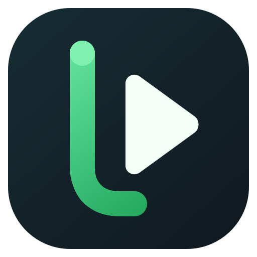

Downloads
Tudo começa com um link
Cole um link e escolha o formato e a qualidade desejados.
SUA MÍDIA, ORGANIZADA
Sua fila 0 itens
Seus downloads organizados em um só lugar

Cole um link e escolha o formato e a qualidade desejados.
Seus downloads organizados em um só lugar